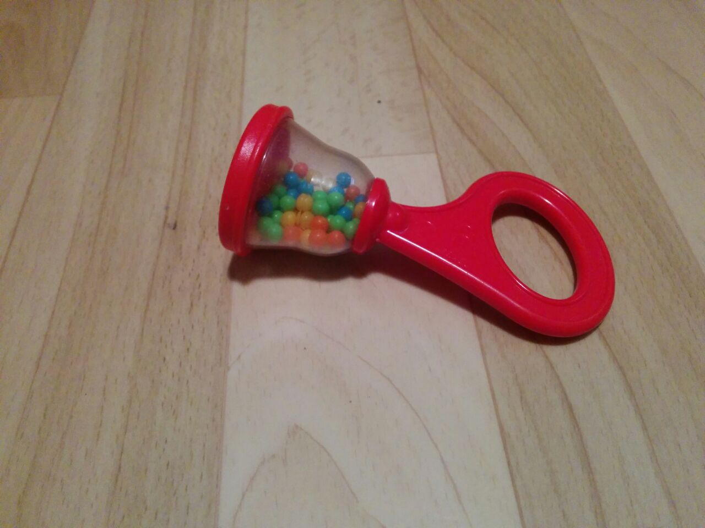
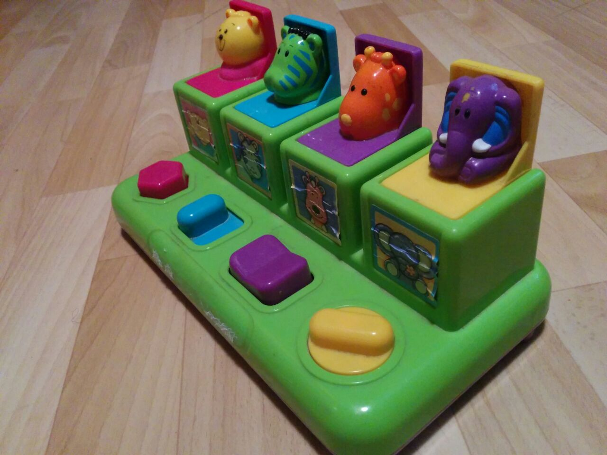
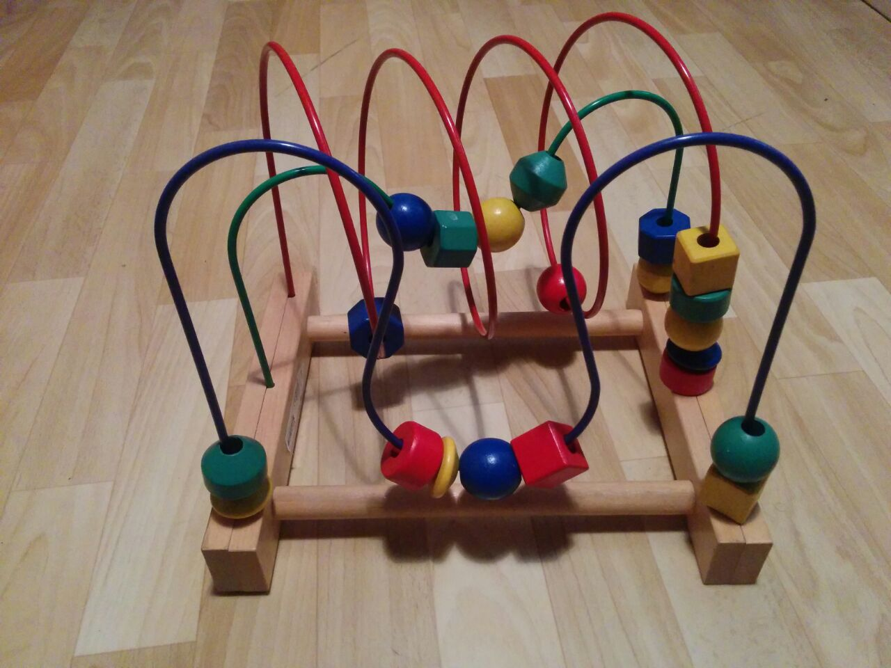
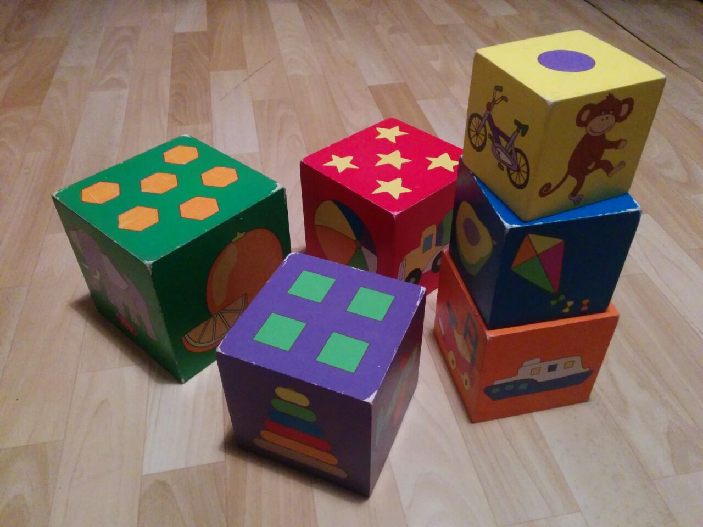

סוגי טיפול המוצעים בקליניקה שלי:
טורטיקוליס הינו מצב בו יש חוסר איזון שרירי בצוואר. מצב זה יכול להיגרם ממספר גורמים, חלקם מולדים - כמו מנח העובר ברחם, אופן הלידה וחלקם סביבתיים ונרכשים לאחר הלידה כמו שכיבה מרובה על הגב, מתן גירויים מאותו צד באופן חוזרני ועוד.
הגורם לתופעה הוא פחות משמעותי מאשר טיפול בתופעה מוקדם ככל האפשר לצורך השגת תוצאות טובות בזמן קצר!!
הטיפול כולל הדרכה להורים להתאמת סביבת התינוק והפיכתה לזו שמגרה התפתחות סימטרית ומונעת חיזוק של צד אחד בלבד. התאמת תרגילים ומשחקים בהתאם לגיל התינוק ויכולתו תוך אמונה שלמידה מוטורית נרכשת בדרך כיף ומשחק בסביבה מתאימה ולא בבכי ולחץ.

איחור התפתחותי -
איחור התפתחותי בשנה הראשונה לחיי הילד יכול להוות מקור דאגה גדול להורים. זוהי שנה משמעותית בהתפתחות היכולות התקשורתיות, המוטוריות והקוגניטיביות.
בעידן האינטרנט כולנו חשופים להרבה מידע כמו סולמות התפתחות שונים, המדרגים את ילדינו לפי יכולתם. הבעיה היא שאת המידע הרב הזה אף אחד לא מסנן ומתאים אותו אישית לנו.
זה השלב בו אני נכנסת לתמונה. תפקידי הוא לבדוק האם באמת קיים איחור התפתחותי, כמה התנועה היא איכותית ומגוונת ומעבר לכך האם הסביבה מותאמת ומאתגרת מספיק? האם ילדכם עם ביטחון תנועתי נמוך? האם אתם מספיק תומכים בו או להיפך, מגוננים עליו יתר על המידה? יחד איתכם נבדוק היכן החוזקות של ילדכם ודרכם נעזור לו להתמודד עם החולשות (שלכל אחד מאיתנו יש..) נתאים לו ולכם תוכנית טיפול המותאמת ליכולותיו על מנת לקדם אותו במעלה סולם ההתפתחות המוטורית.

ליווי התפתחותי - סדנה לאם ולתינוק -
כאשר נולד תינוק נולדים גם הורים, שזקוקים במקרים רבים להכוונה וכלים (גם ההורים הוותיקים).
הסדנה לאם ולתינוק נועדה כדי לתת לכם ההורים את המענה לכל השאלות וכמובן גם התייחסות לפן ההתפתחותי. כיצד ניתן ליצור בביתכם סביבה התפתחותית, תומכת ומתאימה עבורו. בנוסף נתייחס לגופך ולתהליך ההתאוששות מהלידה.
המפגש מתקיים בביתכם, ביום ושעה שנוח לכם. כדי להעניק לכם ההורים כלים חשובים שמקלים על החודשים הראשונים וגם על ההמשך לבוא. (החוויה מתאימה גם להורים לילד שני ומעלה).
במהלך המפגש אתייחס לנושאים רבים כמו למשל:
• איך להפוך כל משחק עם תינוקכם למאתגר, מפתח ומהנה
• התאמת הסביבה להתפתחות תינוקכם
• הילד בוכה כאשר שוכב על הבטן? נלמד מה ניתן לעשות
• כיצד מומלץ לטפל בתינוקך בבית תוך התחשבות בגופך שעבר לידה לא מזמן
רוצים לשמח הורים טריים? (משפחה/חברה/מכרה) או לפרגן לעצמכם משהו שישנה את חייכם? זוהי מתנה מקורית שהיא לא סתם עוד בגד או צעצוע

מעגל אימהות -
במפגשים הללו מועלים נושאים המעניינים אימהות בשלבי אימהות בחודשים הראשונים לחיים, ולא רק אימהות לילד ראשון.
תמיד יש מה ללמוד ולשתף.. זה המקום להכיר אימהות כמוך ולדבר על הנושאים שבאמת מעניינים אותך בתקופה המיוחדת הזו..
במהלך המפגש ניגע בנושאים כמו - חשיבות המגע לתינוק ועיסוי תינוקות, התפתחות בשנה הראשונה, טיפים מעשיים לליווי התפתחות המוטוריקה הגסה, התייחסות לגופך לאחר הלידה והרצאות אורח בנושאים שונים.
ניתן להתארגן כקבוצה של 5-6 אימהות או להירשם לקבוצה קיימת. קבוצות ייחודיות להורי פגים הן עד 4 משתתפים לצורך התייחסות אישית יותר.

טיפול שיקומי -
הטיפול מתמקד בשיפור התפקוד המוטורי והנשימתי, הכולל בין השאר ניידות, ליקויי יציבה וסבולת.
הטיפול נעשה בשיתוף פעולה עם הילד ועידודו, תוך מתן תחושה של הצלחה.
מטרות הטיפול הן להביא את המטופל להשתתפות הגבוהה ביותר בקהילה, עם בני גילו ובביתו. להפחית כמה שיותר את הקשיים ולהביא למיצוי היכולות של הילד, תוך הסתכלות כוללנית לצרכיו השונים.
כחלק מהתהליך, הילד ומשפחתו לומדים כיצד להתמודד עם המגבלה התפקודית הקיימת ע״י שימוש באמצעי עזר שונים, הדרכה לתרגול רלוונטי ועוד. כמו כן, ניתנת הדרכה על ציוד שיקומי רלוונטי לילד. בתחום הנשימתי ההתערבות העיקרית היא במניעת סיבוכים נשימתיים לאחר ניתוחים.
סדנה למטפלות וגננות -
סדנת העשרה לגננות ומטפלות בגיל הרך, חווייתית ומעשירה, שמספקת כלים מעשיים בתחום המוטוריקה הגסה והתאמת הסביבה בגן/משפחתון/מעון.
במהלך הסדנה נעבור על שלבי ההתפתחות השונים ומשחקים שיעזרו לשכלל ולפתח כל שלב ושלב. בנוסף נדבר גם על מתי כדאי להפנות את הילד לבדיקה אצל איש מקצוע.